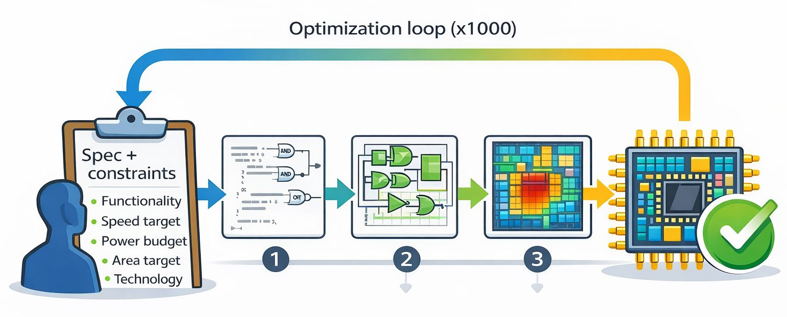
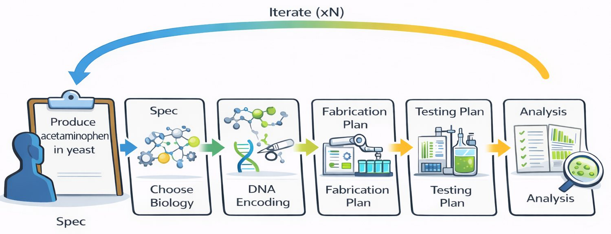

Mechanical engineering — CAD, simulation, then straight to a printed prototype
Automobile manufacturing — designing the car and building it, both automated
Electrical engineering — the extreme case: specification in, layout out
Drug discovery — one assay, millions of compounds, robots, for decades
Biology and chemistry — still largely by hand
In many other fields of engineering there is already extensive incorporation of computational design. In mechanical engineering, we build prototypes of devices in CAD and can simulate physical properties and evaluate them before fabrication. Additionally, we have tools like additive manufacturing that can go directly from CAD to prototype. In automobile manufacturing, the process of designing the car and building the car is similarly highly automated. In electrical engineering, this is taken to the extreme, where the entire process is automated starting with only an initial specification. In biology and chemistry, much of the work is still done by hand. Drug discovery is one area where there has been extensive automation, mainly because once you know your drug target you can screen millions of compounds against it using the same assay. That assay can be automated with robots and performed millions of times, and this has been normal practice for decades.
A list of engineering fields and how far computational design has gone in each: mechanical engineering, automobile manufacturing, electrical engineering and drug discovery are all substantially automated; biology and chemistry are still largely manual.
Design automation, as electrical engineering means it

The term "design automation" comes from the paradigm used in electrical engineering. It turns a human-written chip description into a manufacturable layout by repeatedly building a candidate design, measuring whether it meets requirements, and adjusting settings to improve the result. The goal is to satisfy both correct behaviour and practical limits such as speed, power and chip area. A person provides the spec and the constraints; the software then iterates through logic implementation, physical layout, and measurement and verification. The results feed back into the loop, which may run hundreds or thousands of times, until the design meets the spec and is ready to produce.
A diagram of the electronic design automation loop. On the left a person supplies the specification and constraints: functionality, speed target, power budget, area target and the manufacturing technology. The software then cycles through three phases — translating the description into logic gates, arranging and wiring those gates on the chip, and verifying behaviour against the speed, power and area limits — with results feeding back into the loop.
The same loop, for a cell

The analogy to electrical engineering is imperfect. In biology there is far more uncertainty: we do not have a single, general physics of cells that reliably predicts outcomes across the full design space. Instead we rely on partial models and rules of thumb that apply within narrower subdomains — enzyme function, regulation, strain performance, measurement artifacts. Much of the domain logic is therefore probabilistic and experience-based, not crisp and complete. What does carry over is the organizing idea: start from a clear specification, use software to generate candidate designs, and use verification, simulation where possible, and experimental measurement to decide what to try next.
The same loop drawn for a biodesign goal such as producing acetaminophen in yeast. Left to right: choose the biology — pathways, enzymes, metabolites; encode that choice in DNA; create a fabrication plan for building the strains; create a testing plan for how they will be grown and measured; and create an analysis plan for processing the data. A curved arrow returns results from testing and analysis to the earlier steps.